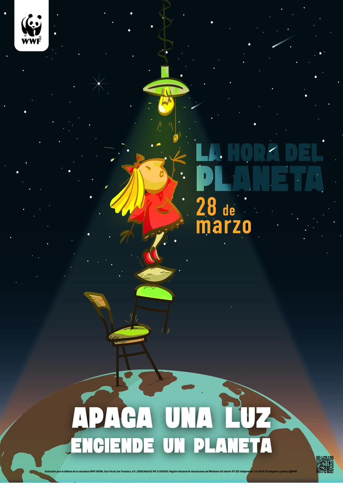
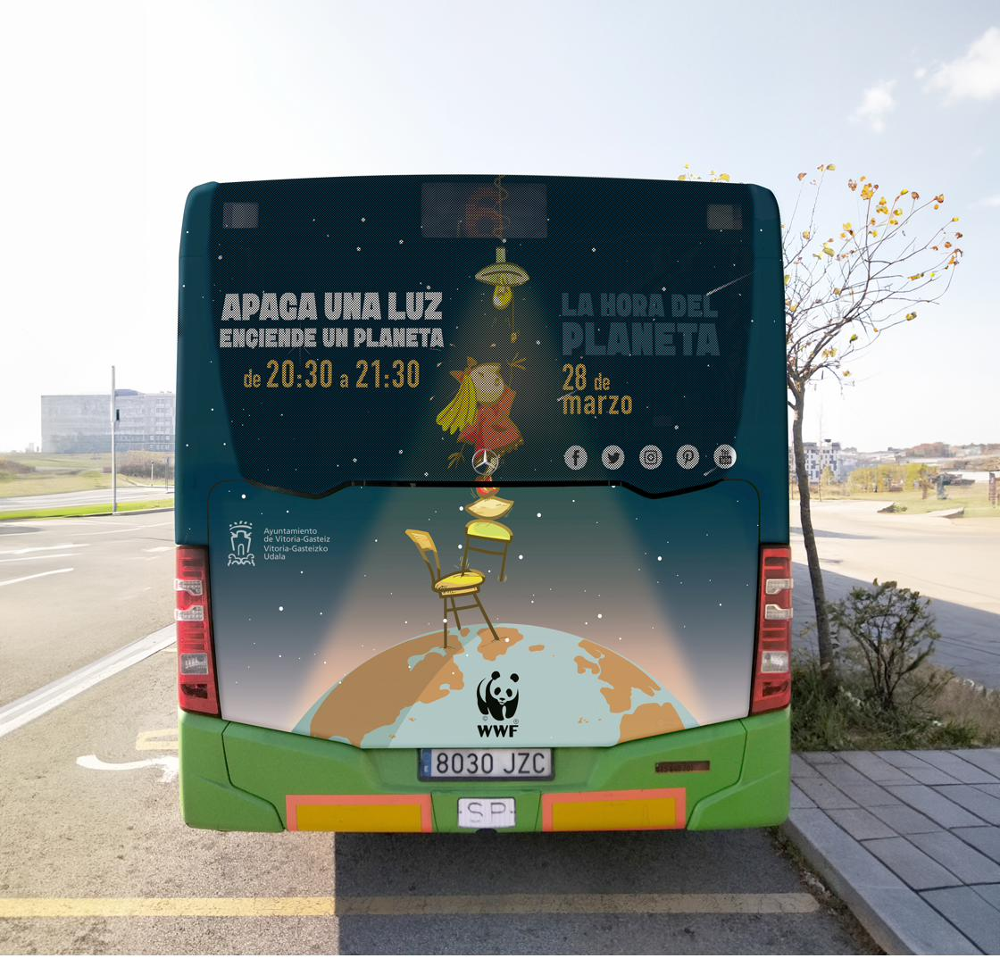
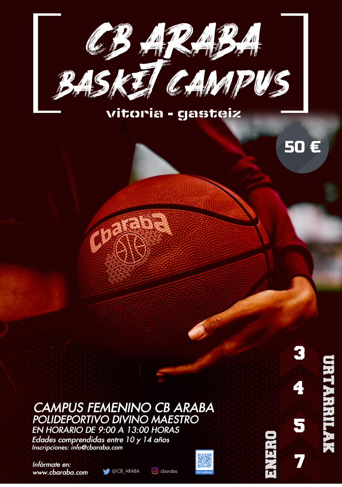
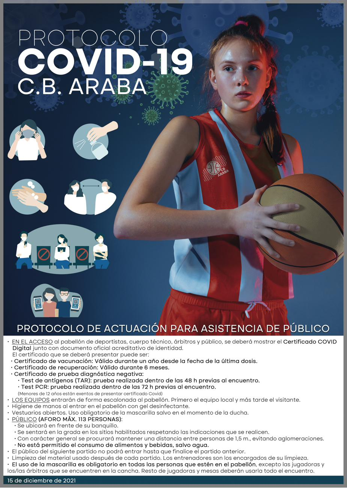
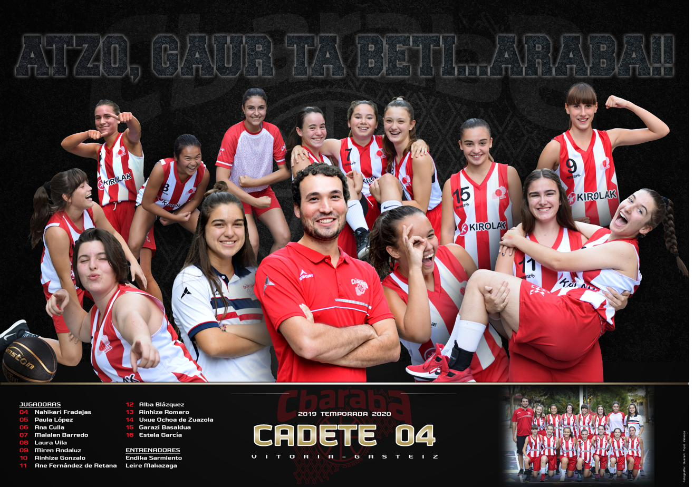
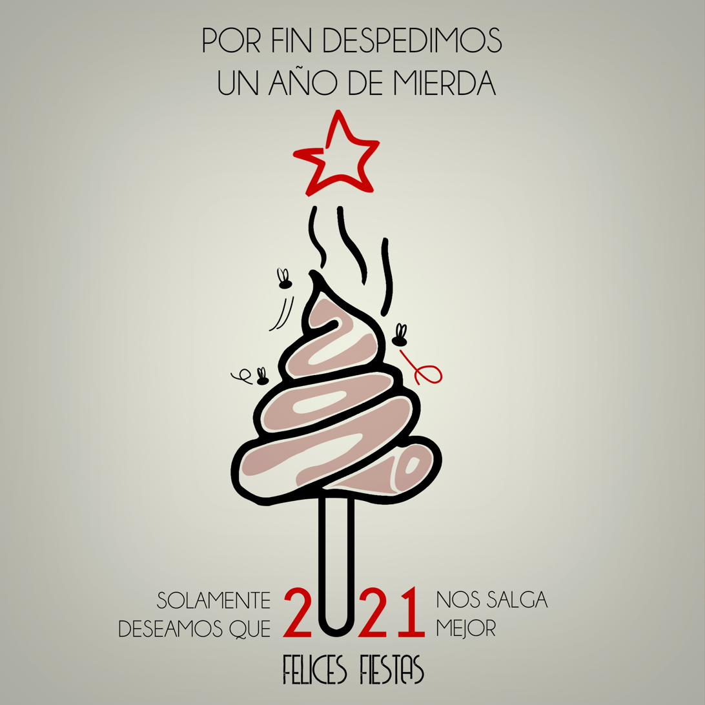
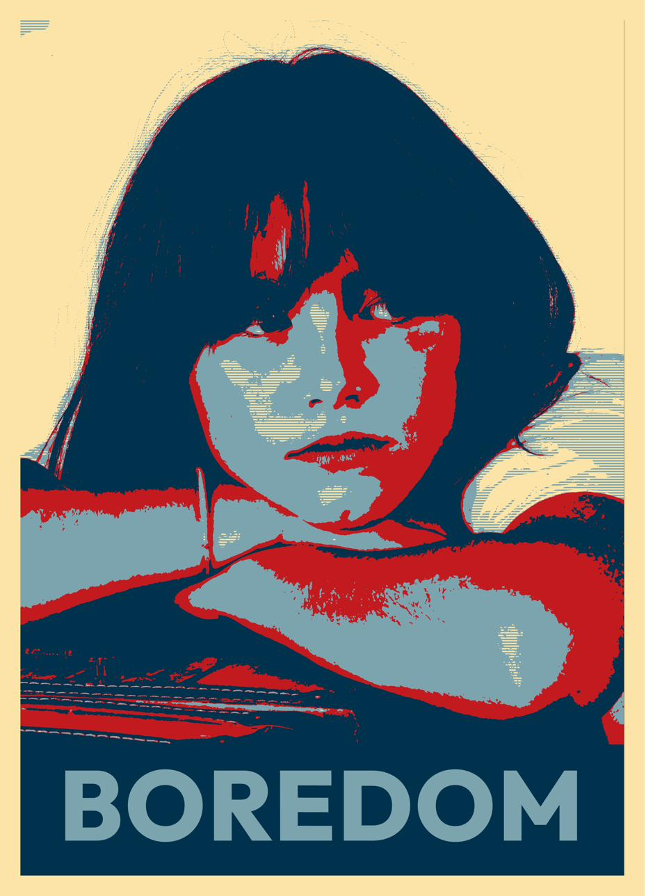
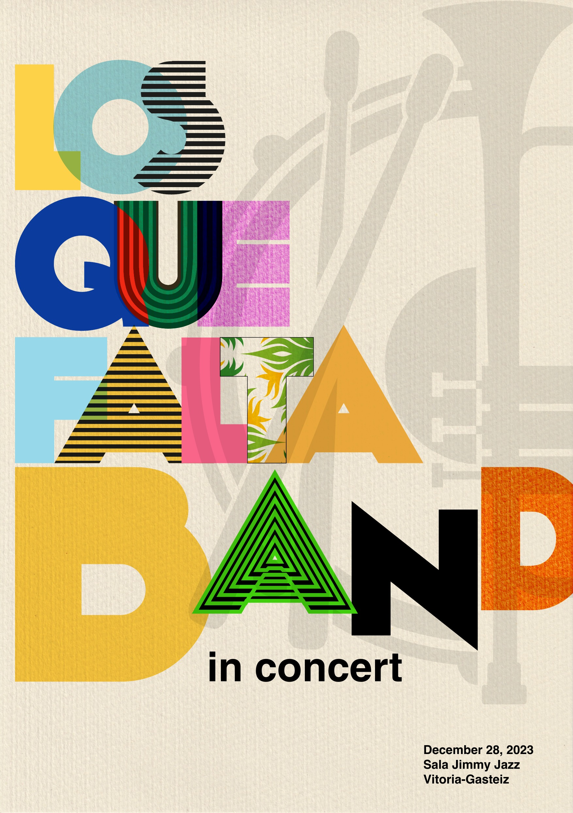
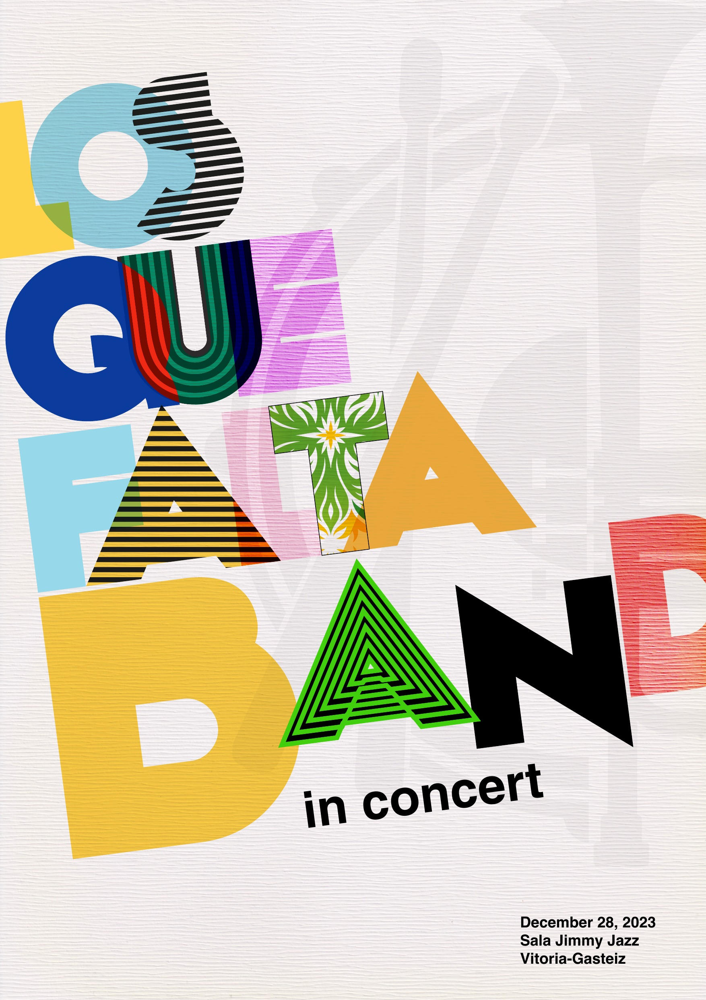

Diseño de cartelería
publicitaria y gráfica exterior
Un cartel tiene que funcionar en un segundo. No hay tiempo para leer, no hay posibilidad de hacer clic. Tiene que capturar la atención, transmitir el mensaje esencial y dejar una impresión duradera antes de que el ojo se mueva a otra cosa. Desde una campaña de alcance nacional como La Hora del Planeta de WWF hasta los materiales anuales de CB Araba, con quien llevo varios años de colaboración continuada.
WWF — «La Hora del Planeta 2015»
Cartel para la campaña 'La Hora del Planeta 2015' de WWF/Adena, en colaboración con el Ayuntamiento de Vitoria-Gasteiz. La campaña se distribuyó en soportes de vía pública de la ciudad, incluyendo la parte trasera de autobuses de la red urbana. Concepto: 'Apaga una luz, enciende un planeta.' Una niña en equilibrio imposible sobre sillas apiladas sobre el globo terráqueo, intentando alcanzar la última bombilla. El diseño se adaptó a múltiples formatos: cartel vertical estándar y parte trasera de autobús urbano.


CB Araba — Cartelería, campus y comunicación deportiva
El Club Baloncesto Araba lleva varios años contando con mi trabajo para sus materiales de comunicación gráfica. La continuidad en un mismo cliente es la mejor prueba de que la relación funciona más allá de un encargo puntual: implica entender el lenguaje visual del club, adaptarse a sus necesidades anuales y mantener coherencia entre campañas de distintas temporadas.







¿Quieres verlo todo junto? El portfolio completo en un único documento.
¿Necesitas cartelería?
Evento, campaña o gráfica exterior. Cuéntame el proyecto.
Solicitar presupuesto